What is your main interests beyond your studies?
Draw a diagram with two point charges so that the electric field is zero somewhere and show where that position is. For a system of two charges, is there always a point where the electric field field is zero?
If you peel two strips of transparent tape off the same roll and immediately let them hang near each other, they will repel each other. If you then stick the sticky side of one to the shiny side of the other and rip them apart, they will attract each other. Give a plausible explanation.
If a glass rod is rubbed on a silk cloth, the rod becomes positively charged, but if you rub the rod on fur, it becomes negatively charged. How can you explain the mechanisms of charge transfer?
An electric dipole consists of two particles: particle 1 with a charge \( Q \) at \( \vec{r}_1 = (a,0,0) \) and particle 2 with a charge \( -Q \) at \( \vec{r}_2 = (-a,0,0) \).
a) Make a sketch of the system. What is the direction of the electric field \( \vec{E} \) for a point on the \( y \)-axis?
\( -\x \)
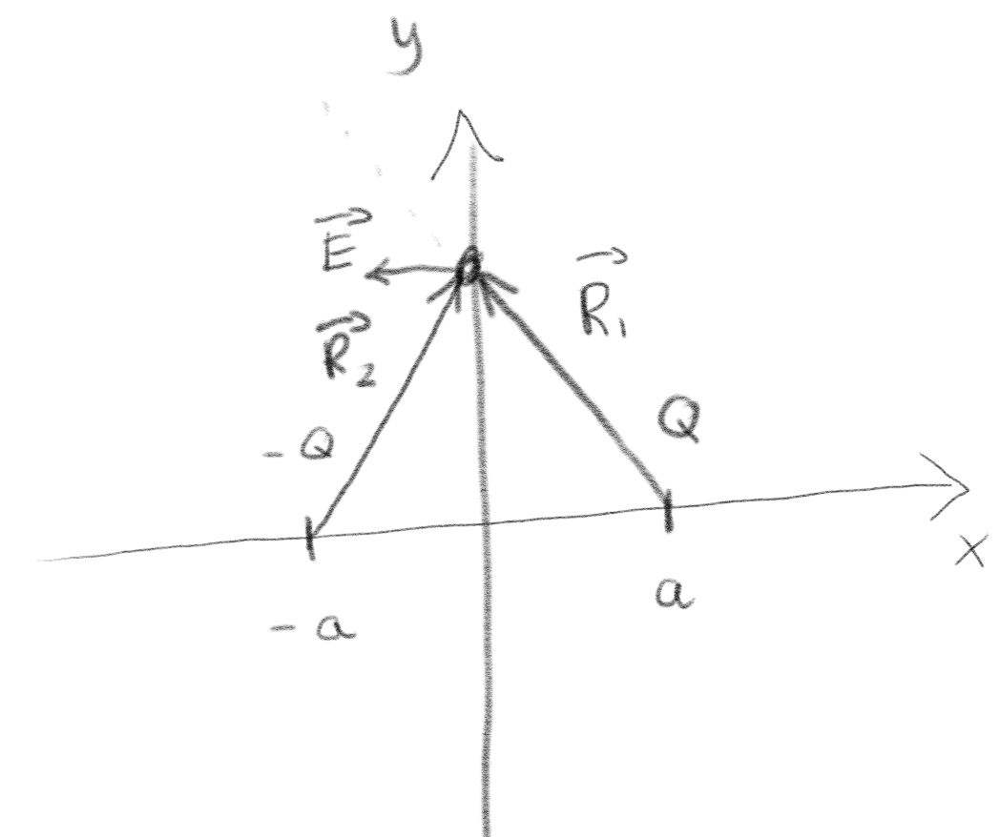
b) What are the two \( \vec{R} \)-vectors you used in this argument? (The \( \vec{R} \)-vector appears in the expression for the electric field from a single charge: \( \vec{E} = Q/(4 \pi \epsilon_0) \vec{R}/R^3 \).)
\( \vec{R}_1 = (-a,y,0) \), \( \vec{R}_2 = (a,y,0) \)
The vector \( \vec{R} \) is defined as \( \vec{R}_i = \vec{r} - \vec{r}_i \). Thus, \( \vec{R}_1 = (0,y,0) - (a,0,0) = (-a,y,0) \). (Notice that \( y \) is the reference point, that is, where we calculate the field.) Similarly, \( \vec{R}_2 = (0,y,0) - (-a,0,0) ) = (a,y,0) \).
c) For a point in a plane through \( x=a \) parallel to the \( yz \)-plane, that is for points \( \vec{r}=(a,y,z) \), what are the two \( \vec{R} \)-vectors needed to find the electric field?
\( \vec{R}_1 = (0,y,z) \), \( \vec{R}_2 = (2a,y,z) \)
In this case we find \( \vec{R}_1 = (a,y,z) - (a,0,0) = (0,y,z) \), and \( \vec{R}_2 = (a,y,z) - (-a,0,0) = (2a,y,z) \).
d) Find an expression for the electric field \( \vec{E}(a,y,z) \).
\( \vec{E} = Q/(4 \pi \epsilon_0) \left( (0,y,z)/(y^2 + z^2)^{3/2} - (2a,y,z)/(4 a^2 + y^2 + z^2 )^{3/2} \right) \)
The electric field is $$ \begin{equation} \vec{E} = \frac{1}{4 \pi \epsilon_0} \left[ Q \frac{(0,y,z)}{(y^2 + z^2)^{3/2}} - Q \frac{(2a,y,z)}{( 4 a^2 + y^2 + z^2 )^{3/2} } \right] \; . \tag{1.1} \end{equation} $$
e) What type of coordinate system would you use to take advantage of the symmetry of the problem? Provide an argument for your choice.
Cylindrical around \( x \).
You can see from the system or the solution above that cylindrical symmetry around the \( x \)-axis would simplify the expressions. In this case, \( \rho = (y^2 + z^2) \) is the distance from the \( x \)-axis, \( \phi \) is the angle around the \( x \)-axis and \( x \) is the position along the cylinder axis.
f) (Challenging) What is the electric field \( \vec{E} \) expressed in this coordinate system for a general point \( \vec{r} = (x,y,z) \)?
\( \vec{E} = Q/(4 \pi \epsilon_0) \left[ \left( (x-a) \x + \rho \rhohat \right)/((x-a)^2 + \rho^2)^{3/2} - \left( (x+a)\x + \rho \rhohat \right) ( (x+a)^2 + \rho^2 )^{3/2} \right] \)
For the general case, \( \vec{R}_1 = (x-a,y,z) \) and \( \vec{R}_2 = (x+a,y,z) \). The electric field is: $$ \begin{equation} \vec{E} = \frac{1}{4 \pi \epsilon_0} \left[ Q \frac{(x-a,y,z)}{((x-a)^2 + y^2 + z^2)^{3/2}} - Q \frac{(x+a,y,z)}{( (x+a)^2 + y^2 + z^2 )^{3/2} } \right] \; , \tag{1.2} \end{equation} $$ which we can simplify by introducing \( \vec{\rho} = \rho \rhohat = (0,y,z) \), thus giving $$ \begin{equation} \vec{E} = \frac{1}{4 \pi \epsilon_0} \left[ Q \frac{(x-a) \x + \rho \rhohat }{((x-a)^2 + \rho^2)^{3/2}} - Q \frac{ (x+a)\x + \rho \rhohat }{( (x+a)^2 + \rho^2 )^{3/2} } \right] \; , \tag{1.3} \end{equation} $$
A rod of length \( L \) has a charge \( Q \). We place the rod along the \( x \)-axis with its center at the origin.
a) Make a drawing of the system. What assumptions would you need to make to approximate this as a line charge with a line charge density \( \rho_l \)? Find \( \rho_l \).
\( \rho_l = Q/L \)
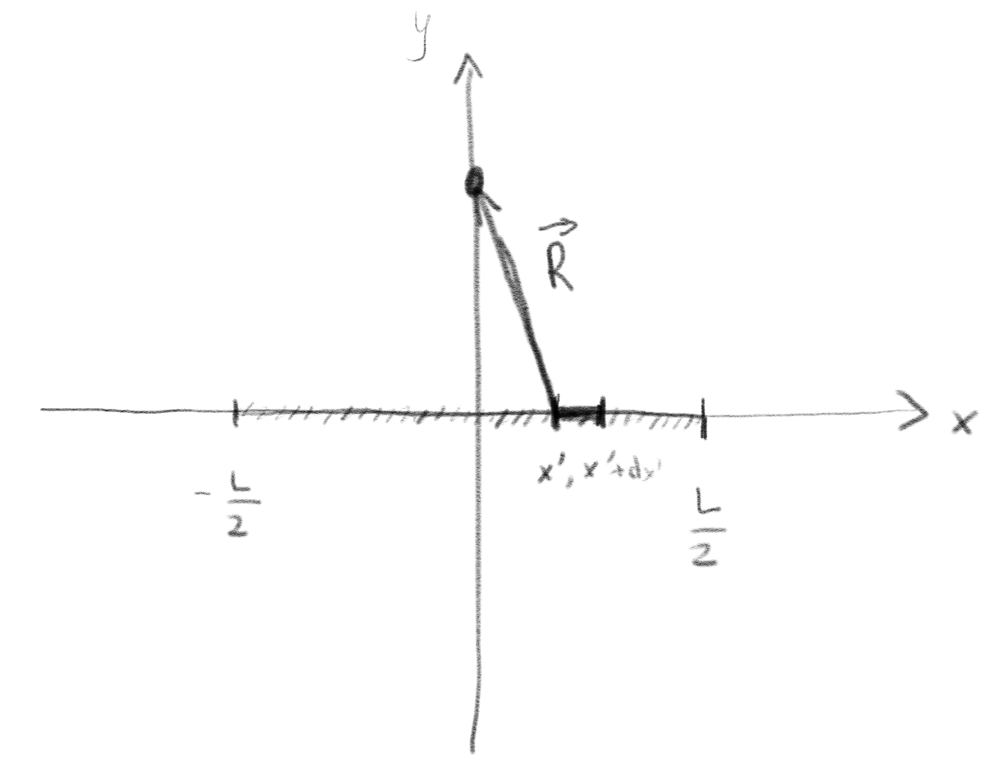
We have to assume that the charge is uniformly distributed and that the rod is thin (has a small radius) so that it can approximated as a line. In this case, \( \rho_l = Q/L \)
b) A small piece of the rod from \( x \) to \( x + \d x \) has a length \( \d x \). What is the charge of this piece?
\( \d q = (Q/L) \d x \)
\( \d q = \rho_l \d x = (Q/L) \d x \)
c) We want to calculate the electric field \( \vec{E}(0,y,0) \) along the \( y \)-axis. What is the contribution to the field from the piece of length \( \d x' \) at \( x' \) expressed using the \( \vec{R} \)-vector? Write down an explicit expression for the \( \vec{R} \)-vector.
\( \d\vec{E} = \rho_l \d x'/(4 \pi \epsilon_0) ( -x',y,0)/ \left( (x')^2 + y^2 \right)^{3/2} \), \( \vec{R} = (-x',y,0) \).
In this case we use \( (x,y,z) \) for the position of the reference point. It is therefore useful to denote the position of the element \( \d x' \) as \( x' \), so that the position of the \( \d x' \) element is \( (x',0,0) \). We do this to avoid confusion with the reference position \( \vec{r} = (x,y,z) \). The contribution to the electric field is $$ \begin{equation} \d \vec{E} = \frac{\rho_l \d x'}{4 \pi \epsilon_0} \frac{\vec{R}}{R^3} \; . \tag{1.4} \end{equation} $$ In this case \( \vec{R} = \vec{r} - (x',0,0) = (0,y,0) - (x',0,0) = (-x',y,0) \).
d) Write down an expression for the electric field \( \vec{E}(0,y,0) \) in terms of an integral. Explain what variable you integrate over. (Ensure that your result is a vector!)
\( \vec{E} = \int_{-L/2}^{L/2} \rho_l/(4 \pi \epsilon_0) (-x',y,0)/((x')^2 + y^2)^{3/2} \, \d x' \)
The electric field is found from the integral over all the charge contributions \( dq = \rho_l dx \): $$ \begin{equation} \vec{E} = \int_{-L/2}^{L/2} \frac{\rho_l \d x'}{4 \pi \epsilon_0} \frac{(-x',y,0)}{((x')^2 + y^2)^{3/2}} \; . \tag{1.5} \end{equation} $$ Notice that the integral is over \( x' \) and not \( x \), that is, \( x \) is a constant in the integration!
e) Explain how you can use the symmetry of the problem to simplify the calculation. What type of symmetry do we have in this problem. Use this symmetry to explain where you know the field if you calculate it in the point \( (0,y,0) \).
In this case, the symmetry of the object is cylinder symmetry along the \( x \)-axis. In addition, when we calculate the field along the \( y \)-axis, we notice that there will be pairs of contributions from \( -x' \) and \( x' \), and that the contributions from these pairs will cancel in the \( x \)-direction. Thus the field will only have a \( y \)-component at \( (0,y,0) \). The cylindrical symmetry means that we can use the result from the point \( (0,y,0) \) for any point in the \( yz \)-plane with the same distance to the \( x \)-axis.
The electric field in a point \( \vec{r} \) from a point charge \( Q_1 \) at a position \( \vec{r}_1 \) is $$ \begin{equation*} \vec{E}(\vec{r}) = \frac{q}{4 \pi \epsilon_0} \frac{\vec{R}}{R^3} \; , \end{equation*} $$ where \( \vec{R} = \vec{r} - \vec{r}_1 \) and \( \epsilon_0 = 8.854187817 \, 10^{-12} \text{C}^2\text{N}^{-1}\text{m}^{-1} \).
a) What is the electric field in the origin from a point charge \( Q_1 = 1 \mu \text{C} \) in the point \( \vec{r}_1 = (1,0) \), where all length units are in meters?
\( E_x = 8.987 \text{kN/C} \)
In this case \( \vec{r} = (0,0) \) and \( \vec{R} = \vec{r} - \vec{r}_1 = (0,0) - (1,0) = (-1,0) = - 1 \x \) in units of meters. The electric field in the origin is is therefore $$ \begin{equation} \vec{E}(0,0) = \frac{1 \mu\text{C}}{4 \pi \epsilon_0} \frac{-(1 \text{m}) \x}{(1 \text{m})^3}\; , \tag{1.6} \end{equation} $$ The numerical value is
import numpy as np
import matplotlib.pyplot as plt
epsilon0 = 8.854187817e-12
q1 = 1e-6
R = -1
Ex = q1/(4.0*np.pi*epsilon0)*R/abs(R)**3
print(Ex)
-8987.55178799791
That is, the field is \( E_x = -8.987 \text{kN/C} \).
b)
The following function efieldq returns the electric field in a point r from a charge q1 in the point r1. Fill in the remaining parts of the program, indicated by dots, to make it work. Check the function by comparing it with the result in the previous exercise.
import numpy as np
import matplotlib.pyplot as plt
def efieldq(q1,r,r1):
# Input: charge q1 in Coulomb
# r: position to find field (in 1,2 or 3 dimensions) in meters
# r1: position of charge q1 in meters
# Output: electric field E at position r in N/C
Rvec = ...
Rnorm = np.sqrt(Rvec.dot(Rvec))
epsilon0 = 8.854187817e-12
E = ...
return E
import numpy as np
import matplotlib.pyplot as plt
def efieldq(q1,r,r1):
# Input: charge q1 in Coulomb
# r: position to find field (in 1,2 or 3 dimensions) in meters
# r1: position of charge q1 in meters
# Output: electric field E at position r in N/C
Rvec = r-r1
Rnorm = np.sqrt(Rvec.dot(Rvec))
epsilon0 = 8.854187817e-12
E = q1/(4.0*np.pi*epsilon0)*Rvec/Rnorm**3
return E
q1 = 1e-6
r1 = np.array([1,0])
r = np.array([0,0])
E = efieldq(q1,r,r1)
print(E)
[-8987.551788 0. ]
The function is
import numpy as np
import matplotlib.pyplot as plt
def efieldq(q1,r,r1):
# Input: charge q1 in Coulomb
# r: position to find field (in 1,2 or 3 dimensions) in meters
# r1: position of charge q1 in meters
# Output: electric field E at position r in N/C
Rvec = r-r1
Rnorm = np.sqrt(Rvec.dot(Rvec))
epsilon0 = 8.854187817e-12
E = q1/(4.0*np.pi*epsilon0)*Rvec/Rnorm**3
return E
We test it by
q1 = 1e-6
r1 = np.array([1,0])
r = np.array([0,0])
E = efieldq(q1,r,r1)
print(E)
[-8987.551788 0. ]
which is the same as we found in the exercise above.
The field on a point on a lattice/grid
Now, we want to visualize the electrical field found by a function such as efieldq. We want to calculate the field on points on a grid with a spacing \( a \) as shown in the figure.
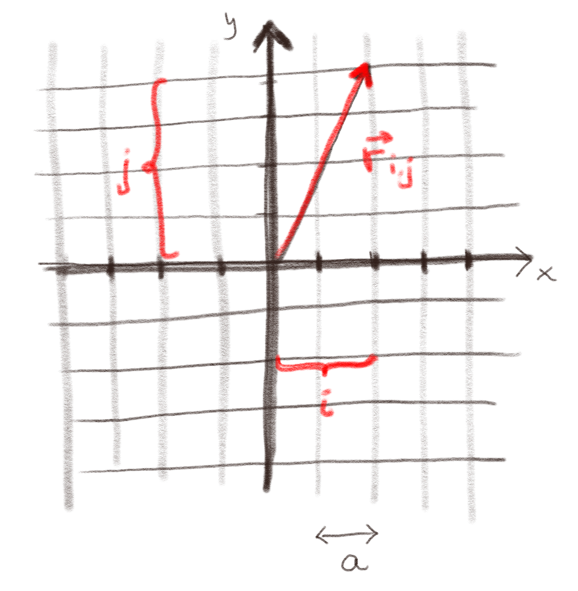
c) What is the position vector, \( \vec{r} \) = \vec{r}_{i,j}$, for a point which is \( i \) units (of length) out along the \( x \)-axis and \( j \) units along the \( y \)-axis?
\( \vec{r} = (a \, i, a \, j) \)
\( \vec{r} = (a \, i, a \, j) \)
Visualizing the field on a lattice
Our goal is to calculate the electric field in an area, that is, in all the points the in figure below. However, we would like to start enumaration from \( i=0 \) and \( j=0 \). We would like to have \( 2N+1 \) elements in each direction. Along the \( x \)-axis, we want to have \( N \) points on along the negative \( x \)-axis, \( N \) points along the positive \( x \)-axis and one point in the origin. In total, \( N+N+1 = 2N+1 \) points.
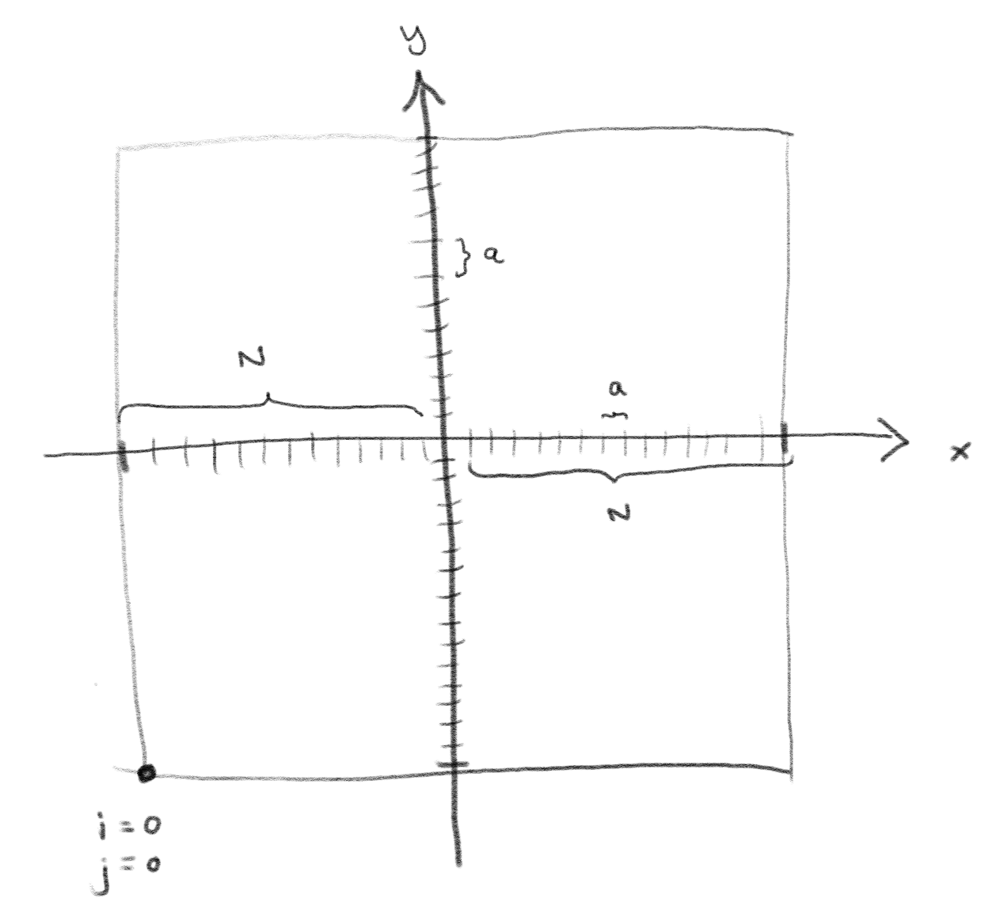
d) If we start enumeration so that \( i=0,j=0 \) is on the bottom-left side of the figure, what is the position \( \vec{r}_{i,j} \) of a point \( (i,j) \)?
\( \vec{r}_{i,j} = ((i-N)a,(j-N)a) \)
We write \( \vec{r}_{i,j} = (x_{i,j},y_{i,j}) \). We find \( x_{i,j} = -Na + ia = (i-N)a \) and \( y_{i,j} = -Na + ja = (j-N)a \)
In order to visualize the field, Python requires us to make arrays for the \( x \), \( y \), \( E_x \) and \( E_y \) with values for each position \( (i,j) \) on the lattice. We could write this as arrays \( x_{i,j} \), \( y_{i,j} \), \( E_{x,i,j} \), \( E_{y,i,j} \). To create this we make empty arrays in Python and a loop that loops through each \( i \) and \( j \) and fills in the values for each array:
r0 = np.array([0,0]) # Position of charge 0
q0 = 1.0 # Charge of charge 0
a = 0.1 # Size of lattice spacing
N = 10 # Number of lattice elements in each direction
rx = np.zeros((2*N+1,2*N+1),float)
ry = rx.copy()
Ex = rx.copy()
Ey = rx.copy()
for i in range(2*N+1):
for j in range(2*N+1):
e)
Write the Python code inside the loop to fill in values in the rx, ry, Ex and Ey arrays for each value of i and j. (Hint: Remember that the function efieldq takes arrays as inputs for r and r1.) Plot the resulting field.
r0 = np.array([0,0])
q0 = 1.0
a = 0.1
N = 10
rx = np.zeros((2*N+1,2*N+1),float)
ry = rx.copy()
Ex = rx.copy()
Ey = rx.copy()
for i in range(2*N+1):
for j in range(2*N+1):
x = (i-N)*a
y = (j-N)*a
rx[i,j] = x
ry[i,j] = y
r = np.array([x,y])
E = efieldq(q0,r,r0)
Ex[i,j] = E[0]
Ey[i,j] = E[1]
plt.quiver(rx,ry,Ex,Ey)
plt.axis('equal')
f) Use the program to visualize the net field from two charges: \( q_1 = -0.1 \mu \text{C} \) at \( \vec{r}_1 = (0,0) \text{mm} \) and \( q_2 = 0.1 \mu \text{C} \) at \( \vec{r}_1 = (0.5,0) \text{mm} \).
import numpy as np
import matplotlib.pyplot as plt
def efieldq(q1,r,r1):
# Input: charge q1 in Coulomb
# r: position to find field (in 1,2 or 3 dimensions) in meters
# r1: position of charge q1 in meters
# Output: electric field E at position r in N/C
Rvec = r-r1
Rnorm = np.sqrt(Rvec.dot(Rvec))
epsilon0 = 8.854187817e-12
E = q1/(4.0*np.pi*epsilon0)*Rvec/Rnorm**3
return E
r1 = np.array([0,0])
q1 = -0.1e-6
r2 = np.array([0,0.5e-3])
q2 = 0.1e-6
a = 0.1e-3
N = 10
rx = np.zeros((2*N+1,2*N+1),float)
ry = rx.copy()
Ex = rx.copy()
Ey = rx.copy()
for i in range(2*N+1):
for j in range(2*N+1):
x = (i-N)*a
y = (j-N)*a
rx[i,j] = x
ry[i,j] = y
r = np.array([x,y])
E = efieldq(q1,r,r1)+efieldq(q2,r,r2)
Ex[i,j] = E[0]
Ey[i,j] = E[1]
plt.quiver(rx,ry,Ex,Ey)
plt.axis('equal')
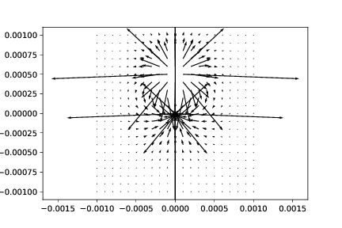
Improved and shorter code
The code presented here can be made shorter by introducing two new programming tools. The function meshgrid that makes arrays such as the rx and the ry arrays for us with a single function call. And we can use .flat to loop through a two-dimensional array with only a single index. The program in its simplified form then becomes
import numpy as np
import matplotlib.pyplot as plt
def efieldq(q0,r,r0):
# Input: charge q in Coulomb
# r: position to find field (in 1,2 or 3 dimensions) in meters
# r0: position of charge q0 in meters
# Output: electric field E at position r in N/C
R = r-r0
Rnorm = np.sqrt(R.dot(R))
epsilon0 = 8.854187817e-12
return q0/(4.0*np.pi*epsilon0)*R/Rnorm**3
r1 = np.array([0,0])
q1 = -0.1e-6
r2 = np.array([0,0.5e-3])
q2 = 0.1e-6
N = 10
a = 0.1e-3
x = np.linspace(-N*a,N*a,(2*N+1))
y = np.linspace(-N*a,N*a,(2*N+1))
rx,ry = np.meshgrid(x,y)
Ex = np.zeros((2*N+1,2*N+1),float)
Ey = np.zeros((2*N+1,2*N+1),float)
for i in range(len(rx.flat)):
r = np.array([rx.flat[i],ry.flat[i]])
E = efieldq(q1,r,r1) + efieldq(q2,r,r2)
Ex.flat[i],Ey.flat[i] = E
plt.quiver(rx,ry,Ex,Ey)
plt.axis('equal')
g) Explain and comment the code so that it can be understood by a fellow student who did not participate in this session.
A point charge \( q_1 = 4.0 \text{ nC} \) is on located the \( x \)-axis at \( x=2.0 \text{ m} \). Another point charge, \( q_2 = -6.0 \text{ nC} \), is located on the \( y \)-axis at \( y=1.0 \text{ m} \).
a) Draw a figure of the charges in a coordinate system and sketch the forces acting on the two charges.
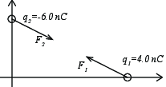
b) Calculate the force \( \vec{F}_{2} \) on the charge \( q_2 \) and the magnitude \( |\vec{F}_{2}| \) of the force on the charge \( q_2 \).
\( \vec{F}_2 = (3.85\cdot 10^{-8},-1.92\cdot 10^{-8})\text{N} \)
We can solve this analytically by first realizing that \( \vec{R} \) is the vector from \( q_1 \) to \( q_2 \), \( \vec{R} = (0,1)-(2,1)\text{m} = (-2,1)\text{m} \). The force on \( q_2 \) is therefore: $$ \begin{eqnarray} \vec{F}_2 &=& \frac{q_1 q_2}{4 \pi \epsilon_0} \frac{\vec{R}}{R^3} \\ &=& \frac{4 \cdot 10^{-9} \cdot (-6) \cdot 10^{-9} \text{C} }{4 \pi 8.85 \cdot 10^{-12} \text{C}^2 \text{N}^{-1} \text{m}^{-2} } \frac{(-2,1)}{\sqrt{5}^3} \\ &=& (3.85\cdot 10^{-8},-1.92\cdot 10^{-8})\text{N} \; . \end{eqnarray} $$
Or we can solve this computationally:
import numpy as np
epsilon0 = 8.854187817e-12 # C^2/(N m^2)
q1 = 4e-9 # C
q2 = -6e-9 # C
r1 = np.array([2,0])
r2 = np.array([0,1])
R = r2-r1
F2 = q1*q2/(4*pi*epsilon0)*R/np.linalg.norm(R)**3
print("F2 = ",F2)
F2 = [3.85858114e-08 -1.92929057e-08]
c) What is the force \( \vec{F}_1 \) on the charge \( q_1 \)?
\( \vec{F}_2 = (-3.85\cdot 10^{-8},1.92\cdot 10^{-8})\text{N} \)
We know from Newton's third law that \( \vec{F}_1 = - \vec{F}_2 \).
We address a system with a single charge \( q \) in \( \vec{r} = 0 \).
a) Use Python to make an arrow plot that shows the electric field \( \vec{E}(x,y) \) in the \( xy \)-plane and a plot that show the stream lines in the \( xy \)-plane.
We use the programs introduced in the textbook:
import numpy as np
import matplotlib.pyplot as plt
#
import numpy as np
import matplotlib.pyplot as plt
#
def efieldlist(r,Q,R):
# Find E*4*pi*epsilon0 at r from a charge q at position r0
E = np.zeros(np.shape(r))
for i in range(len(R)):
Ri = r - R[i]
qi = Q[i]
Rinorm = np.linalg.norm(Ri)
E = E + qi*Ri/Rinorm**3
return E
#
def findfield(R,Q,L,N):
x = np.linspace(-L,L,N)
y = np.linspace(-L,L,N)
rx,ry = np.meshgrid(x,y)
# Set up electric field
Ex = np.zeros((N,N),float)
Ey = np.zeros((N,N),float)
# Calculate the field
for i in range(len(rx.flat)):
r = np.array([rx.flat[i],ry.flat[i]])
Ex.flat[i],Ey.flat[i] = efieldlist(r,Q,R)
return rx,ry,Ex,Ey
#
def visfield(rx,ry,Ex,Ey):
Emag = np.sqrt(Ex**2 + Ey**2)
minlogEmag = min(np.log10(Emag.flat))
scaleE = np.log10(Emag) - minlogEmag
uEx = Ex / Emag
uEy = Ey / Emag
# Visualize using both arrows and colors
plt.figure(figsize=(10,5))
ax1 = plt.subplot(1,2,1)
plt.quiver(rx,ry,uEx*scaleE,uEy*scaleE)
ax1.set_aspect('equal', 'box')
ax2 = plt.subplot(1,2,2)
plt.streamplot(rx,ry,Ex,Ey)
ax2.set_aspect('equal', 'box')
return
# Define charges
Q3 = []
R3 = []
R3.append(np.array([0,0]))
Q3.append(1.0)
# Visualize
rx,ry,Ex,Ey = findfield(R3,Q3,5,21)
visfield(rx,ry,Ex,Ey)
b) Plot \( E(r) = |\vec{E}(r)| \), where \( r = |\vec{r}| \). Explain how to use a plot of \( E(r) \) to obtain the functional form of \( E(r) \) and show that it is \( E(r) \propto r^{-2} \).
We calculate \( |E(x)| \) for \( x>0 \) and plot \( \log(|E|) \) as a function of \( x \). The slope in this log-log plot will be \( -2 \) if \( E(r) \propto r^{-2} \). This is done with the following script:
Q3 = []
R3 = []
R3.append(np.array([0,0]))
Q3.append(1.0)
x = np.linspace(0,100,1000)
E = np.zeros(len(x))
for i in range(len(x)):
r = np.array([x[i],0.0])
Ex,Ey = efieldlist(r,Q3,R3)
E[i] = np.sqrt(Ex*Ex + Ey*Ey)
j = np.where(np.log10(x)>0.0)
lx = np.log10(x[j])
ly = np.log10(abs(E[j]))
plt.plot(lx,ly,'o')
pol = np.polyfit(lx, ly, 1)
lfit = np.poly1d(pol)
llx = np.log10(x[i])
plt.plot(llx,lfit(llx),'-r')
print(pol)
[-2.00000000e+00 -6.77475917e-16]
The resulting behavior is shown in the figure.
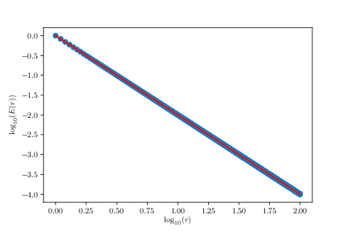
We will then address a system of two charges: a charge \( q \) in \( \vec{r} = (a,0) \) and a charge \( -q \) in \( \vec{r} = (-a,0) \), where \( a \) is a characteristic length.
c) Make an arrow plot of the electric field in the \( xy \)-plane and a plot that shows the stream lines in the \( xy \)-plane.
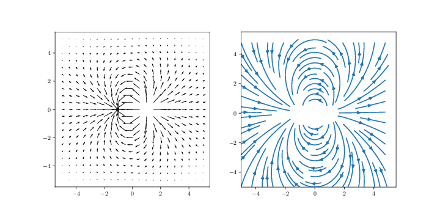
d) Plot \( E(r) \). From the plot, find the functional form, \( E(r) \), in the limit of large \( r \) (\( r \gg a \)).
\( E(r) \propto r^{-3} \)
We use the same approach as above, fitting in the range j = where(log10(x)>0.35). The resulting fit gives
[-3.02768353 0.65045551]
which means that the effective power-law is \( E(r) \propto r^{-3} \) for this dipole system. As we expected from theory.
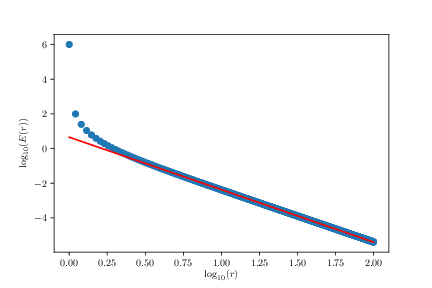
e) Will these results change significantly if both charges have the same sign? How?
\( E(r) \propto r^{-2} \)
If both charges have the same sign, the system will far away look like a system with one charge \( 2q \) in the origin, which will give a behavior \( E(r) \propto r^{-2} \).
We will then address a system of four charges --- a quadrapole --- with \( q \) in \( \vec{r} = (\pm a,0) \) and \( -q \) in \( \vec{r} = (0,\pm a) \).
f) Make an arrow plot of the electric field in the \( xy \)-plane and a plot of the stream lines in the \( xy \)-plane.
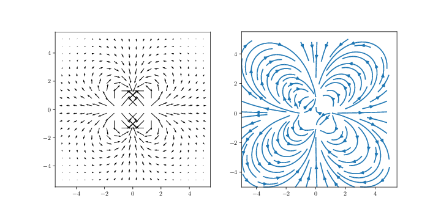
g) Using the method you have developed to find the functional form of \( E(r) \) in the limit of large \( r \) (\( r \gg a \)).
\( E(r) \propto r^{-4} \)
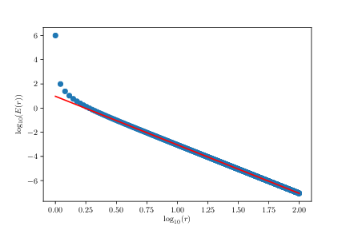
[-4.01128423 0.97391635]
We will here study a half-circle shaped line charge with radius \( a \) as illustrated in the figure.
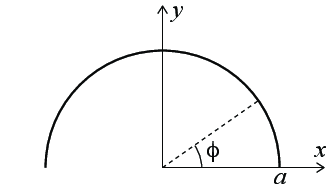
a) Assume that the line has a uniform charge density with a total charge \( Q \). Find the electric field \( \vec{E} \) in the center of the half circle, that is, in the origin of the figure.
\( Q/(2 \pi^2 \epsilon_0 a^2) \y \)
The charge of a small piece of length \( dl = a d \phi \) is \( dq = (Q/L) a d \phi = Q/(\pi a) a d \phi = Q/\pi d\phi \). The position is \( \vec{r}' = (a \cos \phi, a \sin \phi, 0) \) and \( \vec{r} = (0,0,0) \) so that \( \vec{R} = \vec{r} - \vec{r}' = (-a \cos \phi, - a \sin \phi,0) \) and \( R = a \). The contribution to the electric field from this piece is: $$ \begin{equation} d \vec{E} = \frac{dq}{4 \pi \epsilon_0} \frac{(-a \cos \phi, -a \sin \phi, 0)}{a^3} \tag{1.7} \end{equation} $$ We find the electric field by integrating from \( \phi = 0 \) to \( \pi \), getting $$ \begin{equation} \vec{E} = \frac{Q/\pi}{4 \pi \epsilon_0 a^2} \int_0^{\pi} (-\cos \phi, -\sin \phi, 0) d \phi = \frac{Q/\pi}{4 \pi \epsilon_0 a^2} \int_0^{\pi} (-\cos \phi, -\sin \phi, 0) d \phi = -\frac{2Q}{4 \pi^2 \epsilon_0 a^2} \y \tag{1.8} \end{equation} $$
b) Let as assume that the half circle is not uniformly charged, but that the line charge density is given as $$ \begin{equation} \rho_l(\phi) = \frac{Q}{2a}\sin \phi \; . \tag{1.9} \end{equation} $$ Sketch the line charge density, and show that the total charge for the half circle is still \( Q \).
The contribution to the charge from a small piece \( d \phi \) at \( \phi \) is \( dq = \rho_l(\phi) a d \phi = Q/(2a) a \sin \phi d \phi = Q/2 \sin \phi d \phi \). The integral from \( \phi = 0 \) to \( \phi = \pi \) is: $$ \begin{equation} \int_0^{\pi} \frac{Q}{2} \sin \phi d \phi = \frac{Q}{2}2 = Q \; . \tag{1.10} \end{equation} $$
c) Find the magnitude and direction of the electric field in the origin for the charge distribution in b . Which of the charge distributions (from a or b) gives the largest magnitude for the electric field?
\( \vec{E} = -\frac{Q}{16 \epsilon_0 a^2} \)
We find the magnitude and direction by integrating but not including the new expression for \( \rho_l(\phi) \). The integral becomes: $$ \begin{eqnarray} \vec{E} &=& \frac{1}{4 \pi \epsilon_0 a^2} \int_0^{\pi} (Q/2) \sin \phi (-\cos \phi, -\sin \phi, 0) d \phi \\ &=& \frac{Q}{8 \pi \epsilon_0 a^2} \int_0^{\pi} (-\sin \phi \cos \phi, -\sin^2 \phi, 0) d \phi \end{eqnarray} $$ We solve this integral using Sympy:
import sympy as sy
t = sy.Symbol('t')
sy.integrate(sy.sin(t)**2,(t,0,sy.pi))
The result is \( \pi/2 \). The field is therefore: $$ \begin{equation} \vec{E} = -\frac{Q}{8 \pi \epsilon_0 a^2} \frac{\pi}{2}\y = -\frac{Q}{16 \epsilon_0 a^2} \; . \tag{1.11} \end{equation} $$ We see that the electric field is largest for the varying charge density in part b .
In this exercise we study the electric field along the \( z \)-axis (the symmetry axis) from a disk of radius \( a \) and constant surface charge density \( \rho_A \).
a) What is the contribution to the electric field in a position \( z \) from an element from \( r \) to \( r + \d r \) and from \( \theta \) to \( \theta + \d \theta \). (You can assume \( z > 0 \)).
\( \d \vec{E} = \rho_A r \d r \d \theta / (4 \pi \epsilon_0) (-r \cos \theta, - r\sin \theta, z)/(r^2 + z^2)^{3/2} \)
The distance from the element to the observation point \( (0,0,z) \) is \( R = \sqrt{r^2 + z^2} \), which is independent of \( \theta \). The position of the element is \( \vec{r}' = (r \cos \theta, r \sin \theta, 0) \). The \( \vec{R} \)-vector is therefore \( \vec{R} = \vec{r} - \vec{r}' = (0,0,z) - (r\cos \theta, r\sin \theta, 0) = (-r \cos \theta, - r\sin \theta, z) \). The area of the element is \( \d A = r \d r \d \theta \). The contribution from this element to the electric field is therefore: $$ \begin{equation} \d \vec{E} = \frac{\rho_A \d A}{4 \pi \epsilon_0} \frac{\vec{R}}{R^3} = \frac{\rho_A r \d r \d \theta}{4 \pi \epsilon_0} \frac{(-r \cos \theta, - r\sin \theta, z)}{(r^2 + z^2)^{3/2}} \; . \tag{1.12} \end{equation} $$
b) What is the electric field in a position \( z \) (for \( z>0 \))?
\( \vec{E} = \rho_A/(2 \epsilon_0) \left( 1 - z/(a^2 + z^2)^{1/2} \right) \z \)
We integrate the contributions from all the elements from \( r = 0 \) to \( r=a \) and from \( \theta = 0 \) to \( \theta = 2 \pi \). We notice that the integral of \( \sin \theta \) and \( \cos \theta \) is 0. Therefore, there will only be a contribution in the \( z \)-direction. $$ \begin{eqnarray} \vec{E} &=& \int_0^{a} \int_0^{2 \pi }\frac{\rho_A r \d r \d \theta}{4 \pi \epsilon_0} \frac{(-r \cos \theta, - r\sin \theta, z)}{(r^2 + z^2)^{3/2}} \d r \d \theta \\ &=& \frac{2 \pi \rho_A z}{4 \pi \epsilon_0} \int_0^{a} \frac{r}{(r^2 + z^2)^{3/2}} \d r \z \; . \end{eqnarray} $$
import sympy as sy
r = sy.Symbol('r')
a = sy.Symbol('a')
f = r/(r**2 + z**2)**(3/2)
sy.integrate(f,(r,0,a))
The result is \( 1/z - 1/(z^2 + a^2)^{1/2} \). The electric field is therefore: $$ \begin{equation} \vec{E} = \frac{\rho_A z}{2 \epsilon_0} \left( \frac{1}{z} - \frac{1}{(a^2 + z^2)^{1/2}} \right) \z\; . \tag{1.13} \end{equation} $$
c) Find the electric field \( \vec{E} \) in the limit where \( z \) is small (\( z \to 0 \) from above). Interpret the result.
\( \vec{E} = \rho_A/(2 \epsilon_0) \z \)
When \( z \rightarrow 0^{+} \) we see that \( \vec{E} = \rho_A/(2 \epsilon_0) \z \). However, the similar limit when \( z \rightarrow 0^{-} \) points in the opposite direction.
d) Sketch \( |\vec{E}| \) as a function of \( z \) for \( z>0 \).
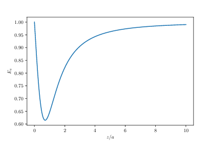
We introduce a dimensionless notation by introducing \( u = z/a \), rewriting the field to be $$ \begin{equation} E_z = \frac{\rho_A}{2 \epsilon_0} \left( 1 - \frac{z}{(z^2 + a^2)^{3/2}} \right) = \frac{\rho_A}{2 \epsilon_0} \left( 1 - \frac{(z/a)}{((z/a)^2 + 1)^{3/2}} \right) \; . \tag{1.14} \end{equation} $$ and plot the results:
u = np.linspace(0,10,1000)
E = (1-u/(u**2 + 1)**1.5
plot(u,E)
The resulting plot is shown in the figure.
Du får i denne oppgaven oppgitt at det elektriske feltet fra en uendelig lang linje langs \( z \)-aksen med linjeladningstetthet \( Q/L \) er: $$ \begin{equation} \vec{E} = \frac{(Q/L)}{2 \pi \epsilon_0 r} \rhat \; , \tag{1.15} \end{equation} $$ hvor \( \rhat \) er en enhetsvektor som peker radielt ut fra \( z \)-aksen og \( r \) er avstanden til \( z \)-aksen. Vi skal bruke dette resultatet til å finne det elektriske feltet først for en linje, så for to linjer som er parallelle og til slutt for to linjer i kryss.
a) Vi plasserer en uendelig lang linje langs \( x \)-aksen med linjeladningstetthet \( -Q/L \). Hva er det elektriske feltet i \( xy \)-planet, \( \vec{E}(x,y) \), fra denne linjen?
Vi lager først en tegning av systemet, som viser linjen langs \( x \)-aksen. Vi tegner også inn punktet \( \vec{r} = (x,y) \) i figuren. Vi ser av figuren at for denne linjen svarer \( r \) til \( y \) og \( \rhat \) til \( \y \) når \( y>0 \) og \( -\y \) når \( y < 0 \). Det elektriske feltet er derfor $$ \begin{equation} \vec{E} = \frac{-(Q/L)}{2 \pi \epsilon_0 y} \y \; . \tag{1.16} \end{equation} $$ Merk at denne måte å skrive det på også gir riktig retning for feltet både når \( y>0 \) og når \( y < 0 \).
b) Vi plasserer en ny uendelig lang linje med linjeladningstettheten \( Q/L \) som er parallel med \( x \)-aksen og som går gjennom punktet \( (0,a) \). Hva er det elektriske feltet i \( xy \)-planet fra systemet som består av de to linjene? Lag et plot som illustrerer feltet.
Først tegner vi en ny figur som viser begge linjene. Det eletriske feltet fra den nye linjen vil ha samme form som i forrige oppgave, men vi må nå ta eksplisitt hensyn til retningen til feltet.
Det elektriske feltet fra den nye linjen vil avhenge av avstanden til linjen gjennom \( y=a \). Det vil si at \( r \) i dette tilfellet vil være \( |y-a| \). Men så må vi passe på retningen til feltet. I dette tilfellet vil retningsvektor også peke i \( y \)-retningen, men den vil peke i positiv \( y \)-retning når \( y>a \) dvs. når \( y-a>0 \) og i negativ \( y \)-retning når \( y < a \) dvs når \( y-a < 0 \). Vi kan derfor skrive det elektriske feltet fra denne linjen som $$ \begin{equation} \vec{E} = \left\{ \begin{array}{cc} \frac{Q}{2 \pi \epsilon_0 L} \frac{1}{|y-a|}\y & \text{ når } y>a \\ \frac{Q}{2 \pi \epsilon_0 L} \frac{1}{|y-a|}(-\y) & \text{ når } y < a \end{array} \right. \tag{1.17} \end{equation} $$ Dette kan vi skrive mer kompakt ved å bruke at \( (y-a)/|y-a| \) er positiv når \( y>a \) og negativ når \( y < a \): $$ \begin{equation} \vec{E} = \frac{Q}{2 \pi \epsilon_0 L} \frac{(y-a)}{|y-a|^2}\y \; . \tag{1.18} \end{equation} $$ Det totale feltet er summen av de to feltene.
Fordi feltet ikke varierer langs \( x \)-aksen er det tilstrekkelig å plotte feltet langs \( y \)-aksen. Det gjør vi ved:
import numpy as np
import matplotlib.pyplot as plt
def E1(y):
return 1/y
def E2(y,a):
return (y-a)/(y-a)**2
a = 1.0
y = np.linspace(-a,2*a,1000)
E = E1(y)+E2(y,a)
plt.plot(y,E,'-k')
plt.ylim((-20,20))
plt.xlabel('$x/a$')
plt.ylabel('$E/E_0$')
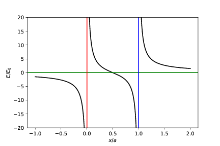
c) Vi plasserer i stedet ut to uendelige linjer. En linje med linjeladningstettheten \( Q/L \) langs \( x \)-aksen og en linje med linjeladningstettheten \( -Q/L \) langs \( y \)-aksen. Hva blir det elektriske feltet i \( xy \)-planet. Skriv et program som visualiser feltet.
Vi finner igjen feltet med superposisjonsprinsippet. For å finne et uttrykk for feltet for linjen langs \( y \)-aksen erstatter vi \( y \) med \( x \) i uttrykket vi fant over slik at $$ \begin{equation} \vec{E}_1 = \frac{Q}{2 \pi \epsilon_0 L} \frac{1}{y}\y \; . \tag{1.19} \end{equation} $$ og $$ \begin{equation} \vec{E}_2 = \frac{-Q}{2 \pi \epsilon_0 L} \frac{1}{x}\x \; . \tag{1.20} \end{equation} $$ Og det samlede feltet blir $$ \begin{equation} \vec{E} = \vec{E}_1 + \vec{E}_2 = \frac{Q}{2 \pi \epsilon_0 L} (-1/x,1/y) \; . \tag{1.21} \end{equation} $$ For å plotte dette i \( xy \)-planet må vi lage en figur som viser både retningen og størrelsen på feltet. Vi bruker et vektor-plot for å vise dette:
import numpy as np
import matplotlib.pyplot as plt
# Felt fra linje langs x-aksen
def E1(r,q):
return q*np.array([0,1/r[1]])
# Felt fra linje langs y-aksen
def E2(r,q):
return q*np.array([1/r[0],0])
Lx = 5
Ly = 5
N = 21
x = np.linspace(-Lx,Lx,N)
y = np.linspace(-Ly,Ly,N)
rx,ry = np.meshgrid(x,y)
# Set up electric field
Ex = np.zeros((N,N),float)
Ey = np.zeros((N,N),float)
# Calculate the field
for i in range(len(rx.flat)):
r = np.array([rx.flat[i],ry.flat[i]])
Ex.flat[i],Ey.flat[i] = E1(r,1.0)+E2(r,-1.0)
# Calculate field magnitude and unit vectors
Emag = np.sqrt(Ex**2 + Ey**2)
minlogEmag = np.nanmin(np.log10(Emag.flat))
scaleE = np.log10(Emag) - minlogEmag
uEx = Ex / Emag
uEy = Ey / Emag
# Visualize using both arrows and colors
plt.figure(figsize=(8,4))
ax1 = plt.subplot(1,2,1)
scaleE = 1.0
plt.quiver(rx,ry,Ex,Ey)#uEx*scaleE,uEy*scaleE)
ax1.set_aspect('equal', 'box')
ax2 = plt.subplot(1,2,2)
plt.quiver(rx,ry,uEx,uEy,np.log10(Emag))
ax2.set_aspect('equal', 'box')
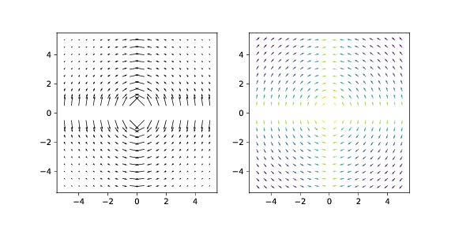
An infinite plane with a homogeneous charge density \( \rho_s \) is placed at \( z=0 \).
a) What does the word homogeneous mean in this context?
\( \rho_s(\vec{r}) = \rho_{s,0} \)
It means that the charge is the same everywhere in space.
b) What is the total charge of the plane?
Infinite
It will be infinite, since the plane is infinitely large and has a constant charge surface density.
c) We want to find the field in a point \( \vec{r} = (x,y,z) \). Use a symmetry argument to find the direction of the electric field in this point.
We start from a given reference point \( (x,y,z) \). The horizontal contribution from a small surface element \( \d x' \d y' \) to the field at \( (x,y,z) \) will be cancelled by another element placed symmetrically around the point \( (x,y,0) \) as illustrated in the figure. The field will therefore only have a \( z \)-component.
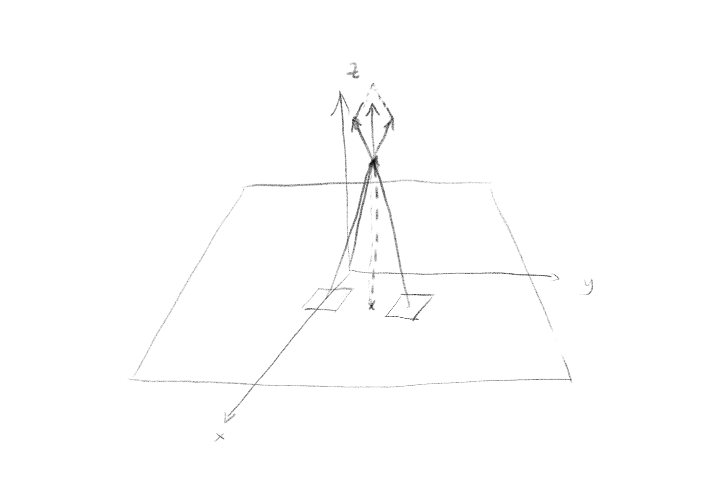
d) What is the contribution \( \d \vec{E} \) to the electric field at \( \vec{r} = (x,y,z) \) from a small piece \( (x',x'+\d x') \), \( (y',y'+\d y') \) at \( (x',y',0) \)? First, make a drawing of the system. Explain why we use \( x' \) and not \( x \). What is the \( \vec{R} \)-vector? Find an expression for \( \d \vec{E} \).
\( \vec{R} = (x-x',y-y',z) \), \( \d \vec{E} = \rho_s \d x' \d y'/(4 \pi \epsilon_0) \, \vec{R}/R^3 \)
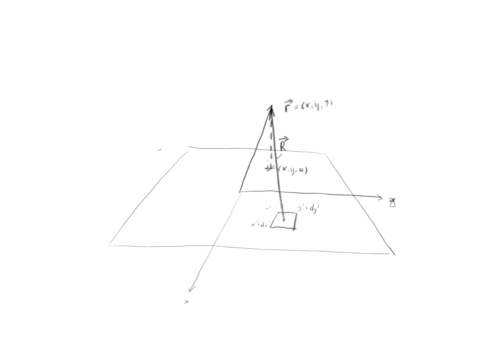
We use \( x' \) and \( y' \) for the element because we want to integrate over all elements. To avoid confusion with the coordinates \( (x,y,z) \) of the reference point, we use \( x' \) and \( y' \) for the surface element.
In this case, we find \( \vec{R} = (x,y,z) - (x',y',0) = (x-x',y-y',z) \). The contribution to the electric field from an element \( \d x' \d y' \) is: $$ \begin{equation} \d \vec{E} = \frac{\rho_s \d x' \d y'}{4 \pi \epsilon_0}\frac{\vec{R}}{R^3} \; . \tag{1.22} \end{equation} $$
e) Find an integral-expression for the electric field \( \vec{E} \) in a point \( \vec{r} = (x,y,z) \) from charges in the region \( 0 < x' < a \), \( 0 < y' < b \), \( z' = 0 \). (You do not need to solve the integral).
\( \vec{E} = \int_0^a \int_0^b \rho_A/(4 \pi \epsilon_0) (x-x',y-y',z)/\left( (x-x')^2 + (y-y')^2 + z^2 \right)^{3/2} \d y' \d x' \)
We find the integral by inserting \( \vec{R} \) in the expression we found above: $$ \begin{equation} \vec{E} = \int_0^a \int_0^b \frac{\rho_A}{4 \pi \epsilon_0} \frac{(x-x',y-y',z)}{\left( (x-x')^2 + (y-y')^2 + z^2 \right)^{3/2} } \d y' \d x'\; . \tag{1.23} \end{equation} $$
We use superposition to find the net electric field on a charge from a distribution of individual charges or from a continous distribution of charges. However, superposition can also be used in other, creative ways as a "trick" for solving problems. In this exercise, look for new ways to apply superposition and reflect on how you used it in your reasoning.
a) Six identical charges \( Q \) are placed at the vertices of a hexagon edge length \( L \). What is the net force on a test charge \( q \) placed at the center of the hexagon?
0
Since the charges are placed symmetrically, all have the same magnitude, and all point in toward the center, the net force is zero.
b) We now remove one of the charges. There are now 5 equal charges present at five of the vertices of the hexagon. What is the net force on the test charge now?
\( \vec{F} = Qq/(4 \pi \epsilon_0 L^2) \hat{u} \), where \( \hat{u} \) points from the center to the removed charge.
We know that the sum of the five remaining charges and the removed charge is zero: \( \vec{F}_5 + \vec{F} = 0 \), which means that \( \vec{F}_5 = - \vec{F} \). The net force is therefore of the same magnitude as from a single charge, but in the opposite direction, pointing outwards if \( Qq>0 \). The magnitude of the force is \( F = Qq/(4 \pi \epsilon_0 L^2) \).
c) How can you generalize your result to the case where you place \( n \) equidistant charges \( Q \) on a circle of radius \( r \)? What is the electric field in the center of the circle? What is the electric field in the center of the circle if you remove one charge at \( (r,0,0) \)?
0 and \( Q/(4 \pi \epsilon_0 r^2) \x \)
The reasoning is there identical to the previous exercise. The net force is zero in the center of the circle when all the charges are placed symmetrical around the circle. Let us assume that a charge \( Q \) at \( \vec{r} = r\x \) is removed. The electric field is then the opposite of the electric field from the charge that is removed $$ \begin{equation} \vec{E} = \frac{Q}{4 \pi\epsilon_0 r^2} \x ; . \tag{1.24} \end{equation} $$
d) The electric field at a distance \( r \) from the center of a uniformly charged sphere of radius \( a \) and volume charge density \( \rho \) is $$ \begin{equation*} \vec{E} = \left\{ \begin{array}{cc} \frac{\rho}{3 \epsilon_0} r \rhat & \quad r < a \\ \frac{\rho}{3 \epsilon_0} \frac{a^3}{r^2} \rhat & \quad r \ge a \end{array} \right. \; . \end{equation*} $$ Explain how you can use superposition to find the electric field inside a spherical shell of uniform charge density \( \rho \) with inner radius \( b \) and outer radius \( a \).
A spherical shell with outer radius \( a \) and inner radius \( b \) plus a sphere of radius \( b \) is a sphere of radius \( a \).
\( \vec{E}_a = \vec{E}_{\text{shell}} + \vec{E}_b \).
\( \vec{E}_{\text{shell}} = 0 \) for \( r < b \); \( \vec{E}_{\text{shell}} = \rho/(3 \epsilon_0) \left( r - b^3/r^2 \right) \rhat \) for \( b < r < a \).
The electric field from a uniformly charged sphere of radius \( a \) is the sum of the electric fields of a uniformly charged sphere of radius \( b \) and a uniformly charged spherical shell, all with the same volume charge densities: \( \vec{E}_a = \vec{E}_{\text{shell}} + \vec{E}_b \) as illustrated in the figure. This gives that \( \vec{E}_{\text{shell}} = \vec{E}_a - \vec{E}_b \).
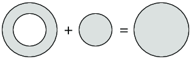
Inside the empty center of a spherical shell, that is, for \( r < b \), we know that \( \vec{E}_a = \rho/(3 \epsilon_0) r \rhat \) and \( \vec{E}_b = \rho/(3 \epsilon_0) r\rhat \) so that \( \vec{E}_{\text{shell}} = 0 \).
Inside the shell, that is, for \( b < r < a \), we know that \( \vec{E}_a = \rho/(3 \epsilon_0) r \rhat \) and \( \vec{E}_b = \rho/(3 \epsilon_0) (b^3/r^2)\rhat \) so that: $$ \begin{equation*} \vec{E}_{\text{shell}} = \vec{E}_a - \vec{E}_b = \frac{\rho}{3 \epsilon_0} r \rhat - \frac{\rho}{3 \epsilon_0} \frac{a^3}{r^2} \rhat = \frac{\rho}{3 \epsilon_0} \left( r - \frac{b^3}{r^2} \right) \rhat \; . \end{equation*} $$
Three point charges with the same charge \( Q \) are placed at each corner \( A,B,C \) in an equilateral triangle with side lengths \( a \). One charge is displaced along the dashed line from \( A \) to the midpoint of \( A' \) on the side \( BC \). The charges in \( B \) and \( C \) are kept in place throughout the displacement. Calculate the work done to carry out this displacement.
\( W = Q^2/(2 \pi \epsilon_0 a) \)
The system is illustrated in the figure. When charge A is in a position \( y \) the \( \vec{R} \)-vector from charge B is \( \vec{R}_B = (-a/2,y) \) and from C is \( \vec{R}_C = (a/2,y) \). The net force from the two charges on charge A is therefore
$$
\begin{equation}
\vec{F} = \frac{Q^2}{4 \pi \epsilon_0} \frac{(-a/2,y)}{R^3} + \frac{Q^2}{4 \pi \epsilon_0} \frac{(a/2,y)}{R^3} = \frac{Q^2}{4 \pi \epsilon_0} \frac{2y}{R^3} \hat{y} \; .
\tag{1.25}
\end{equation}
$$
The work done to carry out the displacement must be a force in the opposite direction to \( \vec{F} \). The displacement is from \( h = \sqrt{3}/2 \) to \( y = 0 \). The work is therefore:
$$
\begin{equation}
W = \int_h^0 - \vec{F} \cdot dy \hat{y} = \int_h^0 -\frac{Q^2}{4 \pi \epsilon_0} \frac{2y}{R^3} dy =
-\frac{Q^2}{4 \pi \epsilon_0} \int_h^0 \frac{2y}{(y^2 + (a/2)^2)^{3/2}}dy
\tag{1.26}
\end{equation}
$$
We solve this using Sympy:
import sympy as sy
a = sy.Symbol('a')
y = sy.Symbol('y')
F = 2*y/(y**2 + (a/2)**2)**(3/2)
sy.integrate(F,(y,sqrt(3)/2*a,0))
2/a
The work is therefore $$ \begin{equation} W = \frac{Q^2}{4 \pi \epsilon_0}\frac{2}{a}=\frac{Q^2}{2 \pi \epsilon_0 a} \; . \tag{1.27} \end{equation} $$
Find \( |\vec{E}| \) at a height \( z \) above an infinitely large, plane surface with a hole with radius \( a \). The surface has a constant surface charge density \( \rho_s \).
Superposition.
\( E_z = \rho_s/(2 \epsilon_0) \, z/(z^2 + a^2)^{1/2} \)
The plan is to solve this by first finding the field from the infinite plane and then subtracting the field from a disk of radius \( a \). We can do this by calculating the field from a disk with radius \( a \). The infinite field is found by letting \( a \rightarrow \infty \). To find the field from a disk or radius \( a \), we integrate the contributions from elemental rings of radius \( r \) and width \( dr \). The field from such a ring is directed in the \( z \)-direction due to symmetry, so we only look at the \( z \)-components, \( E_z = \vec{E} \cdot \hat{z} \):
$$
\begin{equation}
d \vec{E} = \frac{dQ}{4 \pi \epsilon_0} \frac{\vec{R}}{R^3} \; ,
\tag{1.28}
\end{equation}
$$
where \( dQ \) is the charge of the disk element, \( dQ = \rho_s dA \), where \( dA = 2 \pi r dr \) is the area of the disk element. We find the \( z \)-component:
$$
\begin{equation}
dE_z = \frac{2 \pi r dr \rho_s}{4 \pi \epsilon_0} \frac{\vec{R}\cdot \hat{z}}{R^3} =
\frac{r dr\rho_s}{2 \epsilon_0} \frac{z }{R^3} \; ,
\tag{1.29}
\end{equation}
$$
where \( R = (z^2 + r^2)^{1/2} \). The electric field from a finite plate of size \( a \) is therefore:
$$
\begin{equation}
E_z = \int_0^a \frac{r dr\rho_s}{2 \epsilon_0} \frac{r z dr}{(z^2 + r^2)^{3/2} } = \frac{z \rho_s}{2 \epsilon_0} \int_0^a \frac{r}{(z^2 + r^2)^{3/2} } \, dr
\tag{1.30}
\end{equation}
$$
We solve this using Sympy:
import sympy as sy
r = sy.Symbol('r')
z = sy.Symbol('z')
a = sy.Symbol('a')
f = r/(r**2 + z**2)**(3/2)
sy.integrate(f,(r,0,a))
The result is \( 1/z - 1/(z^2 + a^2)^{1/2} \). The electric field is therefore: $$ \begin{equation} E_z = \frac{z \rho_s}{2 \epsilon_0} \left( \frac{1}{z} - \frac{1}{(z^2 + a^2)^{1/2}} \right) = \frac{\rho_s}{2 \epsilon_0} \left( 1 - \frac{z}{(z^2 + a^2)^{1/2}} \right) \; . \tag{1.31} \end{equation} $$ The field from an infinite plate is the limit when \( a \rightarrow \infty \), which is $$ \begin{equation} E_{z,\infty} = \frac{\rho_s}{2 \epsilon_0} \; . \tag{1.32} \end{equation} $$ The field from the plate with the hole is the field from the plate minus the field of the hole: $$ \begin{eqnarray} E_z &=& E_{z,\infty} - E_{z,a} \\ &=& \frac{\rho_s}{2 \epsilon_0} - \frac{\rho_s}{2 \epsilon_0} \left( 1 - \frac{z}{(z^2 + a^2)^{1/2}} \right) \\ &=& \frac{\rho_s}{2 \epsilon_0} \frac{z}{(z^2 + a^2)^{1/2}} \; . \end{eqnarray} $$
In this exercise we will take a look at an electric dipole in a uniform electric field. The distance between the two charges in the dipole is \( d \) as shown in the figure.
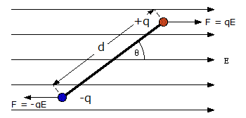
a) What is the net force on the dipole?
\( \sum \vec{F} = 0 \)
b) Find the torque around the center of mass of the dipole in terms of the dipole moment \( \vec{p} = Q \vec{d} \) and the electric field \( \vec{E} \).
The torque is \( \vec{\tau} = \vec{r}\times\vec{F} \), where \( \vec{r} \) is the the vector going from the center of mass to where the force \( \vec{F} \) is applied.
Using the formula for torque and cross product rules we get $$ \begin{eqnarray} \vec{\tau} &=& \vec{r} \times \vec{F} = \left(\frac{\vec{d}}{2} \times q\vec{E}\right) + \left(-\frac{\vec{d}}{2} \times (-q\vec{E})\right) \\ &=& q\vec{d} \times \vec{E} = \vec{p}\times\vec{E} \end{eqnarray} $$
c) For what angles \( \theta \) do we have stable and unstable equilibrium? And when do we have maximum torque?
Stable equilibrium: \( \theta = 0 \), Unstable equilibrium: \( \theta = \pi \), maximum torque: \( \theta = \frac{\pi}{2} \ \ \wedge \ \ \theta = \frac{3\pi}{2} \)
d) Show that for small values of \( \theta \) you get a simple harmonic motion. Here you need to use the small angle approximation (\( sin(\theta) \approx \theta \)) and \( \vec{\tau} = I\vec{\alpha} \), where \( I \) is the moment of inertia and \( \vec{\alpha} \) is the angular acceleration.
A simple harmonic oscillator has the differential equation $$ \begin{equation} m\frac{\d^2 x}{\d t^2} = -kx \; , \tag{1.33} \end{equation} $$ where \( m \) and \( k \) are constants and \( x \) describes the harmonic motion. The solution is $$ \begin{equation} x(t) = Acos(\omega t + \phi) \quad , \quad \omega = \sqrt{\frac{k}{m}} \; , \tag{1.34} \end{equation} $$ where \( A \) and \( \phi \) are constants.
Looking at the torque: $$ \begin{equation} \vec{\tau} = \vec{p}\times\vec{E} \implies \tau = -|\vec{p}||\vec{E}|sin(\theta) = I\alpha \tag{1.35} \end{equation} $$ Using the small angle approximation we get $$ \begin{equation} I\alpha \approx -|\vec{p}||\vec{E}|\theta \tag{1.36} \end{equation} $$ This gives us the differential equation $$ \begin{equation} I\frac{\d^2\theta}{\d t^2} = -|\vec{p}||\vec{E}|\theta \tag{1.37} \end{equation} $$ This is an equation for a simple harmonic oscillator.
e) What is the angular velocity?
f) Find a formula for \( \theta \).
We are looking for a solution like $$ \begin{equation} \theta(t) = Acos(\omega t + \phi) \tag{1.39} \end{equation} $$ In order for energy to be conserved \( A = \theta_0 \) where \( \theta_0 \) is the maximum value of \( \theta \). \( \omega \) is known and \( \phi \) depends on the initial conditions, lets say the \( \theta \) peaks at \( t=0 \), then \( \phi = 0 \). The angle \( \theta \) can therefore be described by the equation $$ \begin{equation} \theta(t) = \theta_0 cos\left(\sqrt{\frac{|\vec{p}||\vec{E}|}{I}}t\right) \tag{1.40} \end{equation} $$
g) Plot the angle over two periods.
The formula for moment of inertia for point mass $$ \begin{equation} I = \sum_i m_ir_i² \tag{1.41} \end{equation} $$ \( m_i \) is the mass and \( r_i \) the distance from the point of rotation to the point mass.
import numpy as np
import matplotlib.pyplot as plt
import scipy.constants as const
theta0 = (10.0/180)*np.pi # initial displacement in radians
q = const.e # charge on dipole in Coulombs
d = 1e-20 # distance separating the charges (m)
m = const.m_e # mass of a single charge (kg)
E = 1e-3 # magnitude of the electric field
I = 2*m*(d/2)**2 # moment of inertia
p = q*d # electric moment
omega = np.sqrt(p*E/I) # angular frequency
T = 2*np.pi/omega # period
t = np.linspace(0, 2*T, 2000) # time interval from t = 0 to t = 2T
theta = theta0*np.cos(omega*t) # solution for Simple harmonic motion
#Plot
plt.plot(t, theta)
plt.title("Simple Harmonic Motion - dipole in an Electric field")
plt.xlabel("time (s)")
plt.ylabel("angle (radians)")
plt.grid()
plt.show()
h)
Find the numerical solution (do not use small angle approximation) and plot both results over four periods. Use SciPy's odeint package to solve the differential equation. The initial conditions are \( q = e \), $d=3\times 10^{-9}$m, $m=3\times 10^{-5}$kg and $E=1000$N/C.
import numpy as np
import matplotlib.pyplot as plt
from scipy.integrate import odeint
theta = np.pi/6 # intial angle of displacement (degres)
q = 1.0e-19 # Charge on dipole in Coulombs
d = 3.0e-9 # distance separating the charges (m)
p = q*d # electric moment
m = 3.0e-5 # mass of a single charge (kg)
E = 1000 # magnitude of the electric field
I = 2*m*(d/2)**2 # moment of inertia
omega = np.sqrt(p*E/I) #angle velocity
T = 2*np.pi/omega # period
# number of time intervals
N = int(1e4)
# set the times to evaluate
t = np.linspace(0, 4*T, N)
# compute approximate theta values on the time intervals
Approx_Solution = theta*np.cos(omega*np.array(t))
def torque(x0, t, p, I, E):
dfdt = np.zeros(2)
dfdt[0] = x0[1]
dfdt[1] = -p*E*np.sin(x0[0])/I
return dfdt
# Set the intial condition [initial angle, initial velocity]
x0 = [theta, 0.0]
# numerically solve the real solution using odeint
sol2 = odeint(torque, x0, t, args=(p, I, E))
# Plot the two solutions
plt.plot(t, Approx_Solution)
plt.plot(t, sol2[:, 0])
plt.grid()
plt.xlabel("time (s)")
plt.ylabel("angle (rads)")
plt.show()
i) Expand the code and plot the difference between the numerical and approximate solution over time. Find where the difference between them is above 0.05 rad. Plot red dots over the numeric solution where that is the case.
# compute the difference between approx and actual on intervals
diff = np.abs(Approx_Solution-sol2[:,0])
# Plot the difference vs time
plt.plot(t, diff)
plt.xlabel("time (s)")
plt.ylabel("Difference")
plt.show()
#finding where the error is bigger than 0.05 rad
index = np.where(diff>0.05)
# Plot the red dots
plt.plot(t, sol2[:,0], label='numeric solution')
plt.scatter(t[index], sol2[index,0], color='r', label='error>0.05 rad')
plt.xlabel("time (s)")
plt.ylabel("angle (rads)")
plt.legend(loc=1)
plt.grid()
plt.show()
(By Sigurd Sørlie Rustad)
In 1909 Robert A. Milikan and Harvey Fletcher tried to measure the elementary electric charge. They did this by measuring the electric field needed to levetate a ionized oil drop. They found the elementary electric charge to be \( 1.5924(17) \times 10^{-19} \), about 0.6\% difference from the current value.
(https://en.wikipedia.org/wiki/Oil\_drop\_experiment)
In this exercise we are going to do something that resembles the Milkan oil drop experiment. Consider the setup shown on the figure. The oil drop is in equilibrium and the mass is \( 4.9 \times 10^{-15} \text{kg} \).
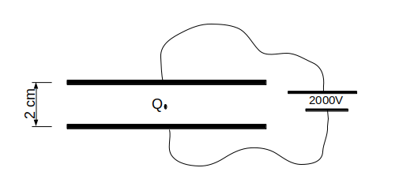
a) Draw a sketch to show the forces acting on the oil drop.
There is an electrostatic force pointing upwords and gravitational force down. They are the same size.
b) What is the sign of the charge on the oil drop?
Negative
c) Find the total charge on the oil drop.
\( q = 4.8 \times 10^{-19}\text{C} \)
d) How many electrons does that amount to?
3
(By Sigurd Sørlie Rustad)
In this exercise we are going to calculate the field from a hemisphere shell (see figure \1). The shell has constant charge density \( \rho \) and radius \( R \).
Figure 1: Illustration of a hemisphere shell. The origin is equidistant to the hemisphere and the hemisphere is oriented such that it has rotational symmetry along the \( z \)-axis.
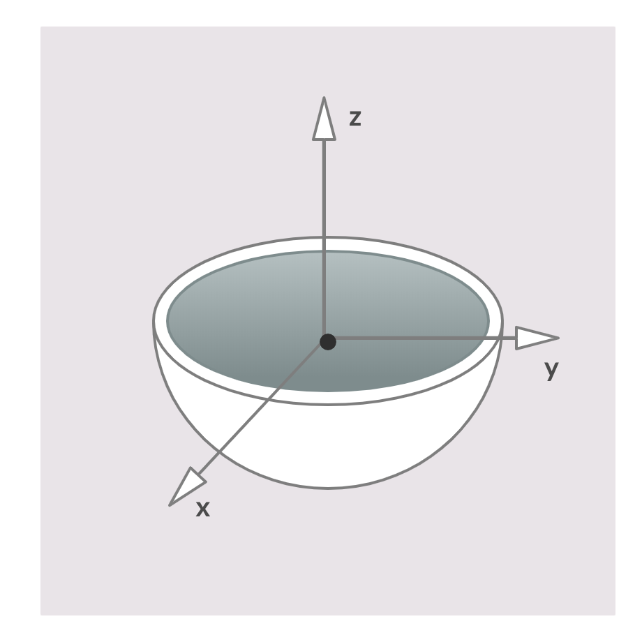
a) Calculate the electric field, \( \vec{E} \), in the origin.
\( \vec{E}_z = \frac{\rho}{4\epsilon_0}\z \)
The contribution to the electric field from a small surface element is given by $$ \begin{equation} \d\vec{E} = \frac{1}{4\pi\epsilon_0}\frac{\rho}{R^2}\rhat \; , \tag{1.42} \end{equation} $$ where \( \rhat \) is a unit vector pointing from the surface element to the origin. Notice that because the origin is equidistant to the hemisphere, the distance from any surface element to the origin is the same. Because of symmetry we only need to look at the component in \( z \)-direction (the \( x \)- and \( y \)-components cancel out). Therefore we get the following expression: $$ \begin{equation} \d E_z = \d\vec{E}\cdot\z = \frac{1}{4\pi\epsilon_0}\frac{\rho}{R^2}\rhat \cdot \z = \frac{1}{4\pi\epsilon_0}\frac{\rho}{R^2}cos(\theta) \tag{1.43} \end{equation} $$ Make sure you understand the last transition, if not; express \( \rhat \) in spherical coordinates and then carry out the dot product. Because we are working with a spherical shape it can be a good idea to transition to spherical coordinates when we do the surface integral. Substituting \( \d S = R^2sin(\theta)\d\phi \d\theta \) we get the following integral: $$ \begin{equation} E_z = \frac{\rho}{4\pi \epsilon_0} \int_0^{2\pi}\int_0^{\pi/2}sin(\theta)cos(\theta)\d\theta \d\phi = \frac{\rho}{4\epsilon_0} \tag{1.44} \end{equation} $$ Therefore we get the field $$ \begin{equation} \vec{E}_z = \frac{\rho}{4\epsilon_0}\z \; . \tag{1.45} \end{equation} $$
A small piece of paper attaches to a balloon so strongly that it does not fall down as shown in the figure.
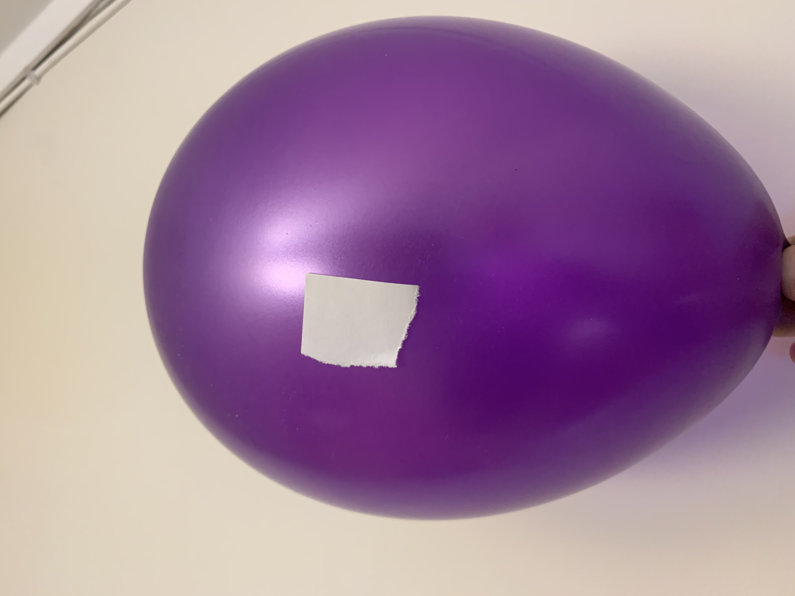
Explain how you would model this system.
If you cut into a material such as a mineral, the fresh surfaced may have effective surface charges.
a) How will you model the electric field from a freshly cut mineral surface?
b) If the surface is flat, what is the electric field outside the surface?
c) Assume that the surface is a fracture. We model the fracture as a sine-wave with amplitude \( A \) and wavelength \( \lambda \). Write a Python program to find the electric field outside the surface. How can you use the result from the previous exercise to test your results?
d) A fracture creates two sine-wave surfaces that are displaced a small distance \( d \) from each other. One surface has positive charge and the other negative charge. What is the electric field between the surfaces?
e) Assume that the surface is carefully constructed to be have a rectangular wave shape with an amplitude \( A \) and a wavelength \( \lambda \). Modify your Python program to find the electric field outside the surface. What are the main differences between the two systems?
f) How would the charged surfaces affect a water molecule? You can assume that you can model the water molecule as a dipole.
g) (Challenging) A real fracture surface has a more complicated shape called a self-affine fractal. An example of a self-affine fractal is a random walk. (Although the scaling behavior of the random walk is different from most fracture surfaces, they both are examples of self-affine fractals). You can generate a random walk of length \( L \) with the following script
from pylab import *
L = 100
y = cumsum(randn(L))
x = arange(L)
y = y - (y[-1]-y[0])/L*x
plot(x,y)
axis('equal')
Use this model of a fracture to study the electric field inside a fracture.
In this project we will develop and study an increasingly complex model for a water molecule. The figure illustrates the charge distribution around a water molecule as calculated by jmol in the molview.org application, where red are negative charges and blue are positive charges. The dipole moment of water is \( 1.85 \text{D} \), where D is a unit called Debye: \( 1 \text{D} \simeq 3.33564 \cdot 10^{−30} \text{Cm} \). We will now build a model for a water molecule.
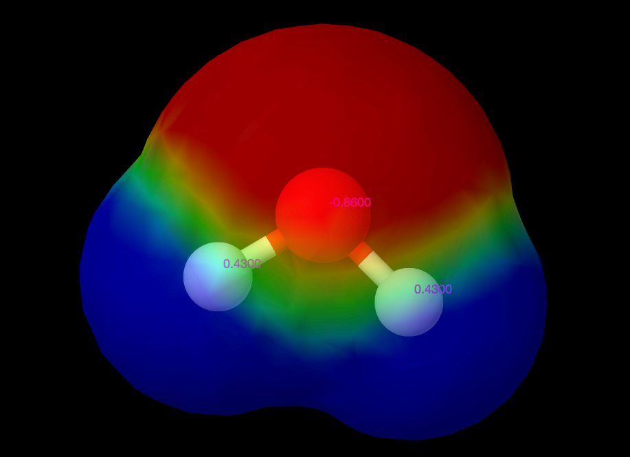
a) How would you model a water molecule as a set of point charges based on the illustration in the figure. (You need to look up realistic numbers and make your own assumptions here).
b) Write a Python script based on your model to find the electric field around the water molecule.
c) For a dipole, the field far (\( r \gg d \)) from the dipole along the dipole axis is \( 2p/(4 \pi \epsilon_0 r^3) \), where \( p = d q \) is the dipole moment. How can you use this to estimate the dipole moment from the electric field?
d) Estimate the dipole moment of your water model and compare with the \( p = 1.85 \text{D} \). Comment on this result.
e) There are many different types of water models used for molecular-scale modeling where the water molecule is modelled as various set of point charges. Look up and describe the models called SPC and TIP4P. Calculate the electric field for from these two models and compare them. Why do you think the TIP4P model was introduced? Do you think the SPC model an exact description of the system?
(From Hornyak and Marion.)
An ionic bond occurs between two charged atoms separated by a distance \( 2a \). For singly charged ions, ions with the charge \( \pm e \), the dipole moment would be \( 2a e \). We often measure molecular dipole moments in units of \( e\text{\AA} \), where \( e \) is the charge of an electron, \( e = 1.602 \times 10^{-19} \text{C} \) and one Angstrom is \( 10^{-10} \text{m} \). Let us now assume that we know the interatom separation, which can be establish by independent methods such as light scattering. This means that we know \( 2a \). In this case, if the dipole moment is different from \( 2a e \) it means that only a part of the charge is displaced or that the charges are not fully displaced the interatomic distance. It depends on the degree the bond is not completely ionic. It is common to characterize the bond by how large a portion it is ionic, that is, by the ratio \( p/(2d e) \), where \( p \) is the measured dipole moment of the molecule. Most bonds are partly ionic and partly covalent.
For example, the lithium fluiride (LiF) diatom has an interatomic separation of \( 2d = 1.52 \text{Å} \) and a dipole moment \( p = 1.39 e \text{Å} \), while hydrogen iodide (HI) has an interatomic separation \( 2d = 1.62 \text{Å} \) and a dipole moment \( p = 0.080 e \text{Å} \).
a) What is the degree of ionic bonding in these two molecules?
b) A water molecule has an angle \( \theta \simeq 105^{\circ} \) between the two hydrogen atoms. The O-H distance is \( 2s = 0.97 \text{Å} \). The observed dipole moment of H$_2$O is \( p = 0.387 e \text{Å} \). What fraction of the O-H bond is ionic?